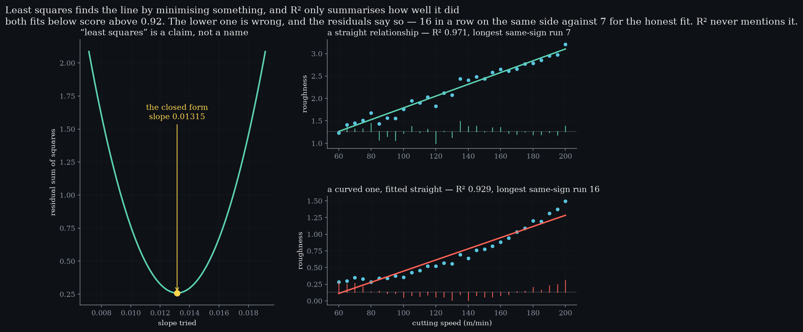
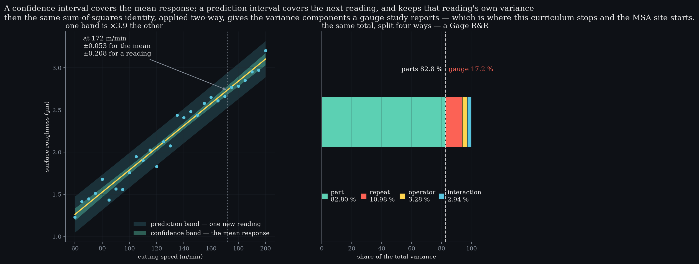

Level 11 · chapter eleven
Relationships
One sum-of-squares identity, wearing three hats: regression, ANOVA, and the gauge study this curriculum hands over to the MSA site.
after Level 10 — counting, not measuring·leads to Level 12 — experiments, and the arc closes
- 11.1One identity, three namesregression, ANOVA and a gauge study are one subtraction
- 11.2Least squares is a claimthe closed form sits at the minimum, not near it
- 11.3R² is a ratio, not a gradeit rises for nothing, and it cannot see a curve
- 11.4Two intervals that are not the same intervalone 1 inside a square root, and what it costs to ignore
- 11.5The same total, split four wayspart, operator, interaction — and the seam to MSA
One identity, three names
Every level so far watched one number over time. why it is the bridgeRegression, ANOVA and a gauge study are one identity. Seeing that is what makes the last of them ordinary.This one asks what a number has to do with another number — and the machinery turns out to be something already familiar, relabelled twice.
The identity the whole level runs on. Relabel the two terms on the right as between-groups and within-groups and it is ANOVA; split the total four ways instead of two and it is a gauge study. Same arithmetic, three names.
Split the total variation in two and you have regression, where the explained part over the total is R². what changesOnly the labels on the terms. The subtraction is the same subtraction.Relabel those two terms between-groups and within-groups and you have ANOVA. Split the total four ways instead of two and you have a Gage R&R. Nothing new is introduced at any step.
Least squares is a claim
The line is not drawn by eye and it is not fitted by iteration: it is the slope that minimises the sum of squared residuals, and the closed form lands exactly at that minimum rather than near it.29 speeds, one lineslope0.01315intercept0.4737residual SS0.2590R²0.9713
Sweeping the slope traces a parabola in the residual sum of squares. orthogonal residualsLeast squares leaves the residuals summing to zero and uncorrelated with the predictor — exactly, not approximately.That parabola is why the phrase means something: any other slope is worse, and it is worse by a computable amount.

R² is a ratio, not a grade
R² is the fraction of the total variation the line accounts for. R² after adding nothingthe line alone0.9713plus 3 noise columns0.9722plus 6 noise columns0.9798plus 10 noise columns0.9805It is a summary, and it has two properties worth knowing before quoting it.
The first is that it cannot fall when a predictor is added, so adding columns of pure noise raises it. adjusted R²The same ratio, penalised for the number of columns spent buying it.Ten such columns take it from 0.9713 to 0.9805 while explaining nothing whatsoever. Adjusted R² exists precisely because of this, and it turns down — 0.9692 to 0.9679.
The second is worse: a high R² can sit beside residuals that are visibly wrong. the number R² cannot seestraight, R²0.971its longest run7curved, R²0.929its longest run16Fitting a straight line to a curved relationship here scores 0.929 — respectable by any rule of thumb — while the residuals stay on the same side of zero for 16 points in a row against 7 for the honest fit.
- R²
- —
- Longest same-sign run
- —
- Slope
- —
Add curvature and watch R² barely move while the run
climbs. The fit is computed here from the normal equations
spclab.relationships is tested against.
Drag the curvature up and watch R² barely move while the run climbs and the status flips. Level 1 againThe longest same-sign run is the same statistic that showed a histogram throws away time order.The residuals are the diagnostic; R² is only the summary.
Two intervals that are not the same interval
Asked to predict at a speed, there are two honest answers and they are different sizes. 95 % half-widthsat 172 m/minthe mean response±0.053one new reading±0.208ratio×3.93One is an interval for the mean response there; the other is an interval for a single new reading.
The difference is a single 1 inside a square root, and that 1 is the variance of the new reading itself. counted, not claimedCoverage over 4 000 refits: 95.1 % for the mean, 95.2 % for a reading.It is why more data shrinks the first interval toward nothing and never shrinks the second below the noise of the process.
Quoting the narrow one when someone asked about the next part is the most common way a regression gets misused on a shop floor, and it is an arithmetic error rather than a judgement call.
The same total, split four ways
Now take the identity two-way. share of total variancepart82.80 %repeat10.98 %operator3.28 %interaction2.94 %Ten parts, three operators, each part measured twice by each: the total variation splits into part, operator, their interaction, and repeat-to-repeat error — using the subtraction from §11.1 and nothing else.
That is a Gage R&R. a cautionTen parts is far too few to pin these percentages. The estimator can even return a negative component, which is reported as zero.Repeatability is the repeat term, reproducibility is the operator term, and the gauge is everything that is not the parts — 17.2 % here. No new technique was introduced to get there.

What those percentages mean — whether this gauge may be used, on what tolerance, and what to do when reproducibility dominates — is a different subject with its own arc, and this curriculum stops at the boundary rather than summarising it badly. the seamThis site never teaches gauge acceptance, and the MSA side never teaches control limits. One link each way.It continues at the MSA platform, which runs these studies; the sibling curriculum that explains them the way this one explains control charts is not written yet.